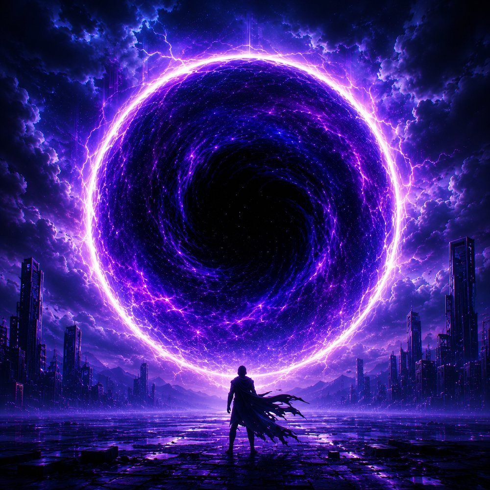
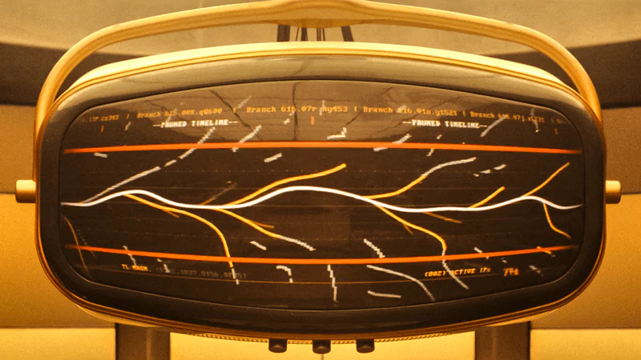
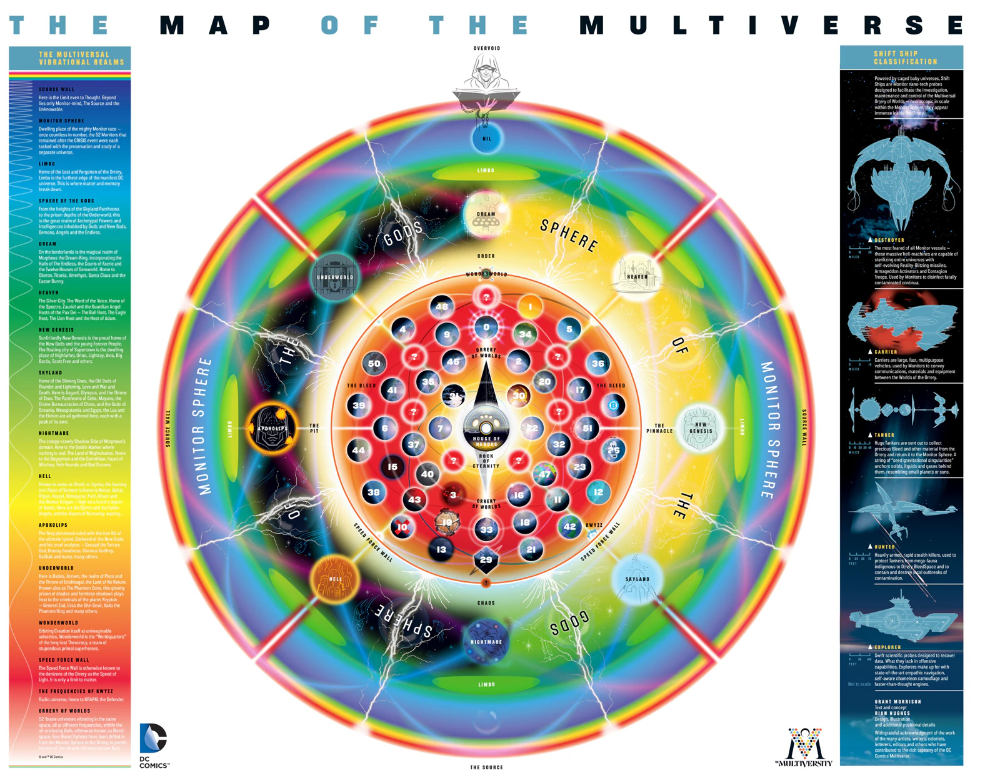
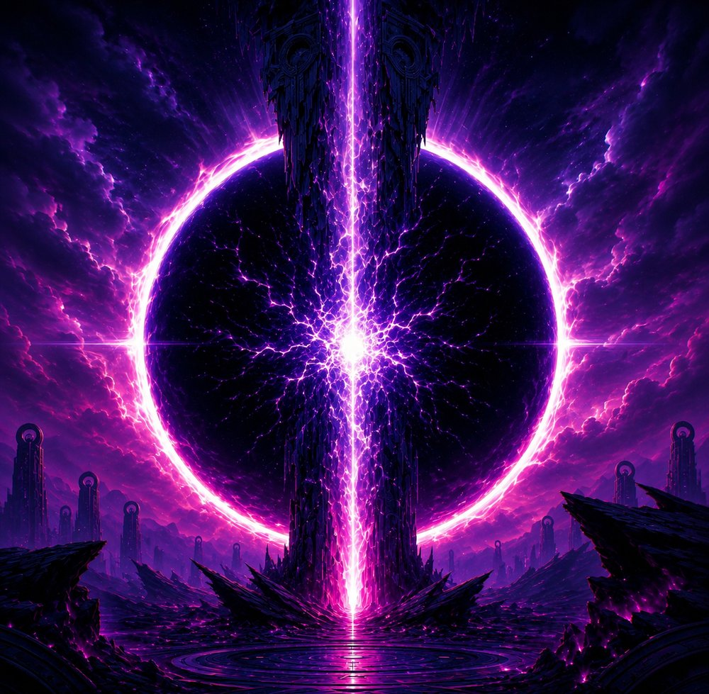
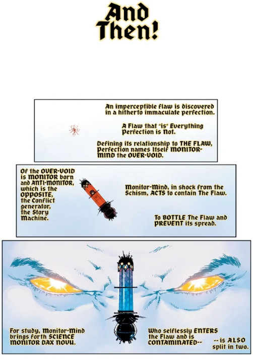
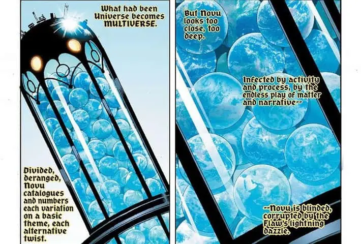
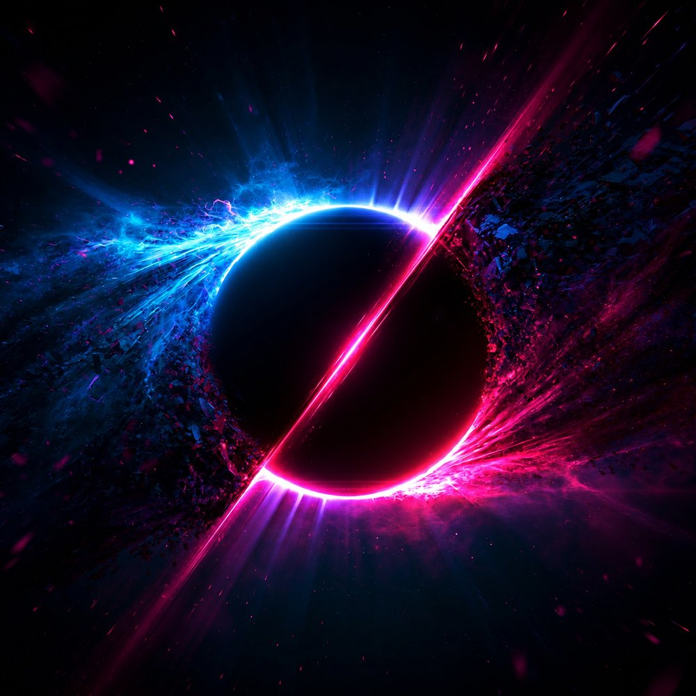

Here is the strangest security story I know, and it is a comic book.
The beings with the most privileged access in all of creation, the ones whose only job was to watch over reality, turned out to be feeding on it. Every one of them had cleared every check. They were the checks. And the operator who first touched the system got owned by the system the moment he plugged in.
This one's about DC Comics, home of Superman, Batman, and a Multiverse of alternate Earths stacked on top of each other. Occupational hazard: I read comic books the way I read system diagrams. Somewhere around my third pass through DC's map of that reality, I realized it wasn't a map at all. It was an architecture document, with sixty-five years of commit history behind it, and the operators were the weak spot.
So here's my design review. Fair warning: I've been collecting these books since I was a kid, and I've been involved in various aspects of security my entire adult life. This is the way.

Two kinds of “dimension”
In physics, a dimension is a direction you can measure: up and down, left and right, forward and back, plus time if you're feeling relativistic.
DC uses the word for something else entirely. When the comics talk about the Fifth Dimension, home of Mister Mxyzptlk and his fellow imps, they don't mean a fifth direction. They mean a higher level of reality. Scott Snyder's Justice League run spelled it out: the Third Dimension is Space, the Fourth is Time, the Fifth is Imagination, and the Sixth is Control.
So in physics, dimensions are coordinates. In DC, they're layers. Every direction we can point lives inside the Third. Our one arrow of time runs inside the Fourth. Above that, it stops being geometry and starts being meaning.
Sixty-five years of refactoring
None of this was designed up front. Like most systems that last, it grew one urgent fix at a time.
It started in 1961 with The Flash #123, "Flash of Two Worlds." Barry Allen vibrated into another Earth and met Jay Garrick, the Flash from the 1940s. DC needed a way to keep its older heroes around without breaking the newer ones, so it spun up a second environment and called it Earth-Two. That was the first fork.
Forks multiply. By the 1980s there were Earths for the Golden Age heroes, for characters bought from other publishers, for evil twins, and for one-off jokes. Readers needed a guidebook to follow along. So in 1985, Marv Wolfman and George Pérez ran Crisis on Infinite Earths, the most famous migration in comics. The infinite Earths collapsed into one. A cosmic being called the Monitor gave his life in the middle of it, and heroes died by the dozen. It was a monolith consolidation, and like every consolidation I've ever lived through, it left a lot of orphaned data behind.
The patches came fast. Zero Hour in 1994 tried to fix the timeline. Then, at the end of 1998, Mark Waid's The Kingdom introduced Hypertime, an idea he cooked up with Grant Morrison. It was an admission, really: the branches never went away, so stop fighting them and document them.
Marvel fans will recognize this fight. In Loki, the Time Variance Authority spends its days pruning branch timelines to protect a single Sacred Timeline (opens in a new tab), which is basically Crisis on Infinite Earths run as a government agency. By the end of the second season, Loki takes hold of the branches himself and lets every timeline grow. DC's Hypertime made the same call twenty-five years earlier.

Still from Loki (2021). © Marvel Studios / Disney.
If you've ever used git, you've already lived this. Every Elseworld is a branch. Every issue is a commit. Crisis on Infinite Earths was an octopus merge that deleted every branch it touched. Flashpoint was a force push that rewrote history into the New 52, and Rebirth was the revert that brought much of it back. Hypertime is just the team finally agreeing to leave the long-lived branches alone.
$ git log --graph --oneline multiverse
* 2024 All In: the Absolute line opens
* 2016 Rebirth: revert, legacy restored
* 2011 Flashpoint: force push, New 52
* 2007 52: 52 Earths restored
* 1998 Hypertime: long-lived branches OK
*-. 1985 Crisis: octopus merge, pruned
|\ \
| | * 1964 Earth-3 branches off main
| |/
|/|
| * 1961 Flash of Two Worlds: Earth-2
|/
* 1938 Action Comics #1: initial commitInfinite Crisis (2005) and the weekly series 52 (2006 to 2007) brought the Multiverse back, this time capped at exactly 52 worlds. Final Crisis (2008) stress-tested it. Flashpoint (2011) rebooted the whole line. Then in 2014, after more than fifty years in production, Morrison's The Multiversity finally published the first official architecture diagram.
After that the pace picked up. Dark Nights: Metal (2017) added a basement. Snyder's Justice League (2018 to 2020) went looking for the original architect. Dark Nights: Death Metal (2020) declared that every story ever told counts. Dark Crisis on Infinite Earths (2022) lifted the 52-world cap and restored the infinite Multiverse. And in 2024, DC All In started the current era.
- 1961 fork spin up Earth-Two The Flash #123
- 1985 migrate consolidate infinite Earths into one Crisis on Infinite Earths
- 1998 docs admit the branches never left Hypertime, The Kingdom
- 2006 feat restore the Multiverse, capped at 52 52
- 2011 reboot reimage the whole line Flashpoint
- 2014 docs publish the architecture diagram The Multiversity
- 2022 feat lift the 52-world cap Dark Crisis on Infinite Earths
- 2024 merge Alpha and Omega DC All In, DC K.O.
If that sounds like a codebase, it's because it is one. Hundreds of writers, thousands of issues, no single owner, and a business that can't take the system down for maintenance. Every Crisis is a migration, and every reboot is a reimage. And somehow the lights stay on.
Reading the official map
Here's the diagram Morrison and designer Rian Hughes drew for The Multiversity. Take a minute with it. I needed three passes before the rings stopped looking like a dartboard.

The Map of the Multiverse, from The Multiversity (2014). Grant Morrison, text and concept. Rian Hughes, design. © DC Comics. Interactive version on dc.com (opens in a new tab)
At the center sits the Orrery of Worlds: 52 universes occupying the same space, each vibrating at a different frequency so they don't collide. It's multi-tenancy: same hardware, separate tenants, with isolation done by frequency instead of by VLAN. Right in the middle of it, the House of Heroes and the Rock of Eternity act as the shared services that every tenant can reach.
earth-0 · Prime Earth
The main DC universe, where the monthly books live.
first appeared: 2011, Flashpoint #5
same hardware, separate tenant · the main line
- earth-0 · Prime Earth: The main DC universe, where the monthly books live.first appeared: 2011, Flashpoint #5 · the main line
- earth-2 · Golden Age: Modern takes on the 1940s heroes, a young Jay Garrick's Flash among them.first appeared: 1961, The Flash #123 · nostalgic
- earth-3 · Crime Syndicate: Evil twins of the Justice League run the world.first appeared: 1964, Justice League of America #29 · corrupted
- earth-12 · Batman Beyond: A future Gotham with a new, younger Batman under Bruce Wayne's eye.first appeared: 2015, The Multiversity Guidebook #1 · neon future
- earth-22 · Kingdom Come: An aging Superman ends his exile to rein in a reckless new generation.first appeared: 1996, Kingdom Come #1 · twilight
- earth-23 · President Superman: Calvin Ellis is both Superman and President of the United States.first appeared: 2009, Final Crisis #7 · civic
- earth-30 · Red Son: Superman landed in the Soviet Union instead of Kansas.first appeared: 2003, Superman: Red Son #1 · cold war
- earth-33 · Earth-Prime: Our world, where the heroes are only comics.first appeared: 1968, The Flash #179 · ours
The space between those worlds is the Bleed, a concept DC borrowed from Warren Ellis's Wildstorm books. It's the transit network. Ships cross it, and things leak through it. The legend even notes that the Monitors drilled siphons from their sphere down into the Orrery to harvest it, about the most honest picture of a control plane tapping a data plane I've ever seen on a poster.
Around the Orrery runs the Speed Force Wall, which the map calls the speed of light for the people inside, and only a limit to matter. Think of it as a rate limit. Then come the outer rings: the Sphere of the Gods, holding every pantheon from Olympus to Apokolips, and past that Limbo, where the map says matter and memory break down. Every org has one of those. It's the recycle bin nobody ever empties.
Outside everything sits the Monitor Sphere, where the operators live. Beyond it is the Source Wall, the limit even to thought, borrowed from Jack Kirby's Fourth World. That's the perimeter. Nothing gets past it, at least in theory, and DC has spent decades testing that theory.
And at the very top, above the whole diagram, a hooded figure reads a book. Morrison calls it the Overvoid and has described it as something like God, looking at the Multiverse the way you'd look at a spot of ink on a blank white page. I read it more simply. That figure is you, holding the comic, with more access than anyone inside the book. Hold that thought. It's where this ends.
Don't skip the sidebar on the right, either. It catalogs the Monitors' Shift Ships: destroyers, carriers, tankers, hunters, and explorers, each built for a job. The destroyers exist to sterilize universes that have become contaminated. If you've ever reimaged a compromised fleet instead of trying to clean it, you know exactly how those Monitors felt.
The stack
Morrison's map is drawn as rings, seen from above. Add what Metal and Snyder's Justice League put on top of it, turn it on its side, and you get something you could hang in any network operations center:
Between the layers sit the connectors and buffers. The Speed Force links Space and Time like a message bus. The Antimatter Universe runs as the mirror-image environment. And Limbo holds every character the story forgot about but never quite deallocated.
If you came up through networking, this probably looks familiar. The OSI model starts with raw bits on a wire and climbs to meaning at the Application layer. DC's stack makes the same climb, from the raw potential of the Forge to the ideas in the Sphere of the Gods. The fit is loose, and I won't pretend otherwise, but it's there:
| DC layer | OSI (7) | TCP/IP (4) |
|---|---|---|
| 6 Monitor Sphere | no layer: governance, visibility, orchestration | no layer |
| 5 Sphere of the Gods | 7 Application, 6 Presentation, 5 Session | Application |
| 4 Time | 4 Transport | Transport |
| 3 Space | 3 Network | Internet |
| 2 Dark Multiverse | 2 Data Link | Link |
| 1 Cosmic Forge | 1 Physical | Link |
Notice what neither model has: a slot for the Monitor Sphere. It isn't a layer. In Zero Trust terms, it's the cross-cutting capabilities, visibility and analytics, automation and orchestration, and governance, applied across every pillar at once. CISA's model treats them that way, and DoD's goes further, making visibility and automation pillars of their own. Either way, that's the control plane this essay is named for. And OSI versus TCP/IP is the same split DC lives with: seven tidy layers in the textbook, four that actually ship. Morrison's map is the textbook. The monthly comics are what ships.

None of this is physics, of course. DC borrowed science's vocabulary and built a theology out of it. Marvel shipped a cinematic universe. DC has spent more than eighty years maintaining a mythology, and you can see the maintenance history in the architecture.
The flaw in the perfection
Which brings me back to the operators, and to how Morrison says the whole thing started. He told it in Final Crisis: Superman Beyond, and it reads like an incident report.
In the beginning there is a perfect, empty mind, the Overvoid, and it discovers a flaw in itself. A speck. Something that "is" everything perfection is not. The mind defines itself by its relationship to the flaw and takes a name: Monitor-Mind. Then it does what any operator does with an anomaly. It acts to contain it. It bottles the flaw to prevent its spread.
Two things are born in that moment. The Monitor, and its opposite, the Anti-Monitor, which Morrison calls "the Conflict generator, the Story Machine." File that away. It matters later.
Then Monitor-Mind does the next thing any of us would do. It sends in a probe to study the anomaly up close: the Science Monitor, Dax Novu. Novu enters the flaw and starts cataloguing. He numbers every variation on the basic theme, every alternative twist, and in the act of cataloguing, what had been a Universe becomes a Multiverse. The observer creates the thing he was sent to observe.
Novu looks too close, too deep. He is "infected by activity and process, by the endless play of matter and narrative," blinded by the flaw's lightning, and split in two.

(full size, opens in a new tab)
(full size, opens in a new tab)Final Crisis: Superman Beyond #2 (2009). Grant Morrison, writer. Doug Mahnke, artist. © DC Comics.
Read that as an engineer. The first operator to touch the system was contaminated by it. The probe came back changed, and nobody checked what came back with it. Nobody in this origin is a villain yet. The problem is a probe that came back dirty and went straight back into service.
Who watches the Monitors?
So every architecture has a weak spot, and in DC's it's the operators. I don't think that's a design failure. Build a watchtower out of the thing it watches and this is what you get.
The first Monitor we met, back in 1985, was the hero of the story. He saw the Crisis coming, gathered the heroes, and died so the rest of reality could survive. Honestly, a good admin.
By the time of Final Crisis there were 52 Monitors, one assigned to each world. Then Morrison finished the thought he started with Novu. The Monitors had been feeding on the stories they were supposed to protect. The one who saw it clearly, Dax Novu himself, became the vampire of the Multiverse: Mandrakk, the Dark Monitor. The most privileged account in creation was also the oldest. When the dust settled, only one Monitor was kept on, the young Nix Uotan, Novu's own son.
| Monitor | Badge | Behavior |
|---|---|---|
| Monitor of Earth-8 | cleared | watching |
| Monitor of Earth-12 | cleared | watching |
| Monitor of Earth-51 | cleared | watching |
| Mandrakk | cleared | feeding on the stories |
I've spent a good part of my career in counterintelligence and insider threat work, so you can imagine how hard I laughed at that one. It's the oldest lesson in the field. The access that lets someone protect a system is the same access that lets them hurt it, and tenure makes it worse, not better. That's why the best insider programs watch what people do, not just what they're cleared for.
Snyder took it one step further back. His Justice League introduced Perpetua, the original architect of the Multiverse and mother of the Monitor, the Anti-Monitor, and the World Forger. She'd built the first version to serve her, not the people living in it. Her own sons turned her in, she was sealed in the Source Wall, and the Multiverse was restarted on new rules. It's a supply-chain story at heart: the scariest vulnerability is the one the designer put there.
The Alpha and the Omega
Remember the Story Machine? Morrison's origin says the opposite was born in the same breath as the Monitor, and that the opposite is where stories come from. DC's current era is running that idea at full scale.
DC launched its "All In" initiative in October 2024. Yes, it abbreviates to "AI." And yes, I'm sure somebody in that marketing meeting knew it. It opened with a special that split the line in two. On one side, Superman, later tied to Alpha energy. On the other, Darkseid, seeding a whole new reality, the Absolute Universe, with Omega energy.
At first it read as hero world versus dark world. The further it went, the more it read as a duality: two halves that oppose and complete each other. Al Ewing's Absolute Green Lantern made the hint hard to miss. Oa has been the Green Lantern Corps' home planet for decades. In this book, the people who get judged are sent away to wait in "OA," spelled out as Omega-Alpha. Once Oa became Omega-Alpha, I couldn't unsee the shape: one cycle that keeps itself going.

The oldest name for that shape is yin and yang. My favorite parallel comes from Shinto, where a single kami has two sides: the ara-mitama, its wild and destructive face, and the nigi-mitama, its calm and gentle one. Same spirit, two expressions, only whole together.
And yes, a guy who spends his working hours pairing red teams with blue teams to make purple was always going to fall for that one. Morrison built the opposition into the origin story. The Conflict generator is the Story Machine.
When I first wrote this piece, I said I might be reading tea leaves, and that I'd wait for the next big event to see. Then DC K.O. wrapped up in March 2026. Lex Luthor was the one wearing the crown at the end of the tournament, which, for an insider-threat guy, is the least surprising sentence in this essay. Then the Time Trapper poured Alpha and Omega energy into Superman at once. Superman took the crown off Luthor, ran Darkseid out of the universe, and gave the power up: "I am not a King Omega. Because we don't need one." One man carried both energies, and he handed them back. I'm not claiming I called it. But I'm not not claiming it, either.
What a security person takes from all this
Strip away the capes and you're left with lessons I'd put in front of any architecture review board.
Systems that last get refactored. DC never got to start over with a clean sheet. Every Crisis was a migration done live, with readers watching. Most of our environments are the same.
Write the diagram down. DC ran a Multiverse for decades before anyone published an official map. Once Morrison did, every writer after him had something to build against. That's how the next team avoids breaking things.
Quarantine the probe. Novu came back from the flaw changed, and the change took a few billion years to show. Anything that touches a compromised system is suspect until proven otherwise, including your own tools.
Watch the watchers. The Monitors are the clearest insider threat story I know, and the oldest account was the worst one. Being there longest is not the same as being trustworthy.
Keep an adversary on the payroll. Alpha and Omega, red and blue, ara and nigi. Morrison wrote the Anti-Monitor into the first second of creation and called it the Story Machine. The systems that hold up are the ones that keep a working adversary around.
Why it holds up
DC's cosmology is a modern myth built from quantum vocabulary, metaphysics, comparative religion, and pure story logic. It's messy and it sometimes contradicts itself, like any production system that's been running this long. It still works.
A forge of raw potential sits at the bottom, a watchtower sits at the top, and strung between them is every story anyone ever believed in hard enough. The watchtower got compromised. Of course it did. The only operator in the whole design who never gets owned is the one above the control plane, outside the perimeter, holding the book and turning the page.
That's you. Keep your hands on the book.
Further reading: DC's official Map of the Multiverse (opens in a new tab) and its history of the Multiverse (opens in a new tab), Final Crisis: Superman Beyond #1 and #2 (opens in a new tab) (2008 to 2009), Grant Morrison and Doug Mahnke, for the Overvoid origin, the DC Fandom wiki entries on the Multiverse (opens in a new tab), the Divine Continuum (opens in a new tab), the Absolute Universe (opens in a new tab), Earth Omega (opens in a new tab), and DC All In Special #1 (opens in a new tab), plus the Marvel Cinematic Universe wiki on the Sacred Timeline (opens in a new tab). For a great deep dive on Darkseid's place in all this, watch Tyler's channel, The Imaginary Axis, on YouTube. Start with his breakdown of Darkseid's true nature (opens in a new tab), then the follow-up (opens in a new tab).